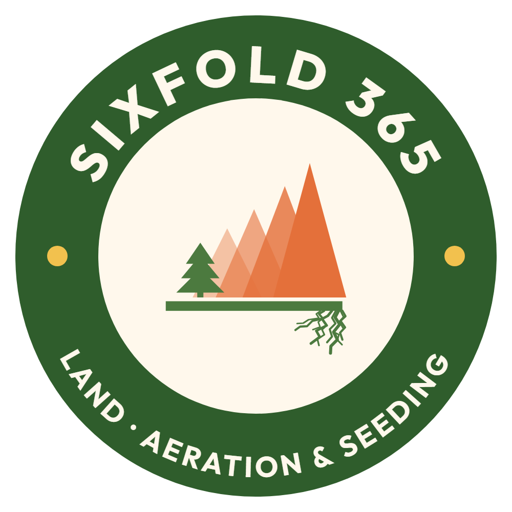
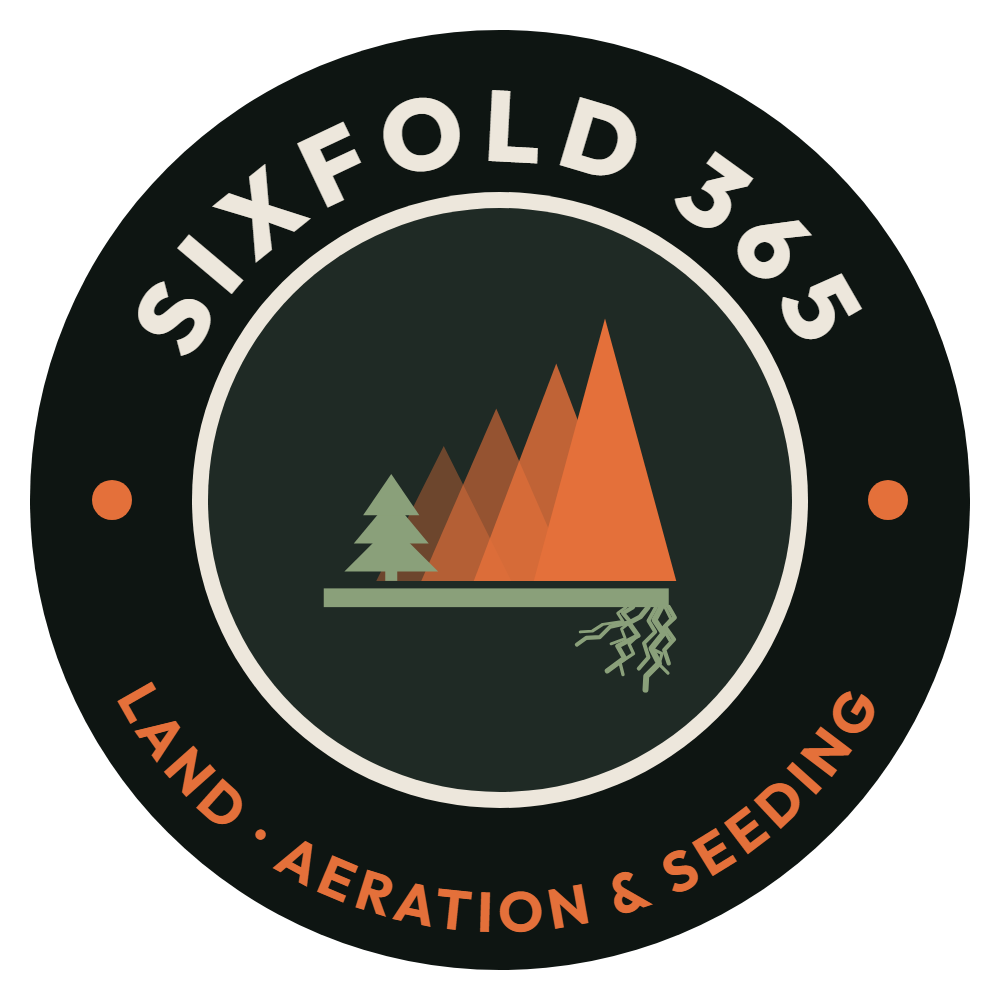
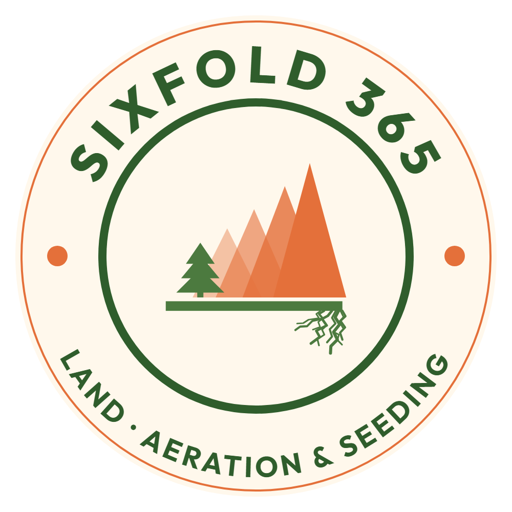
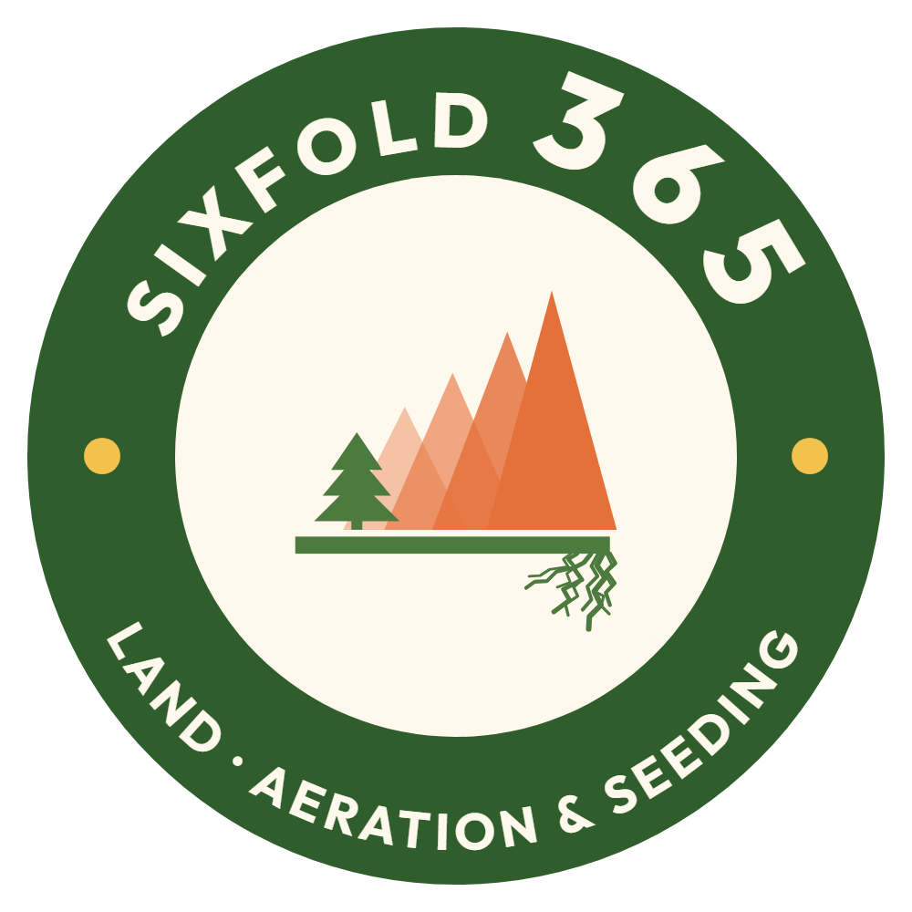
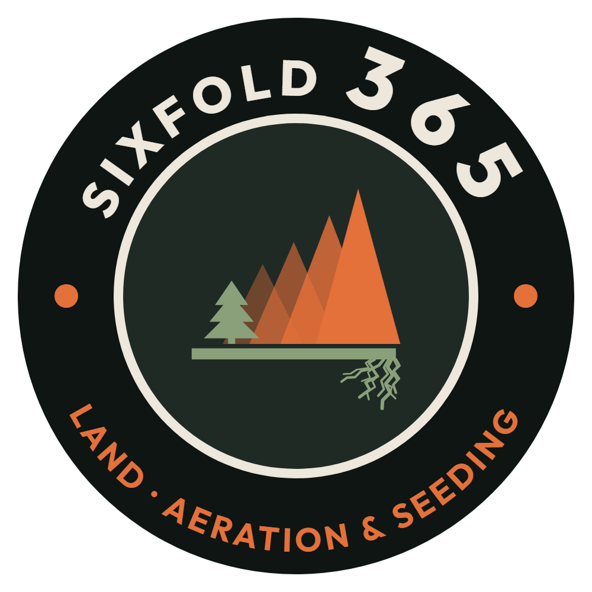
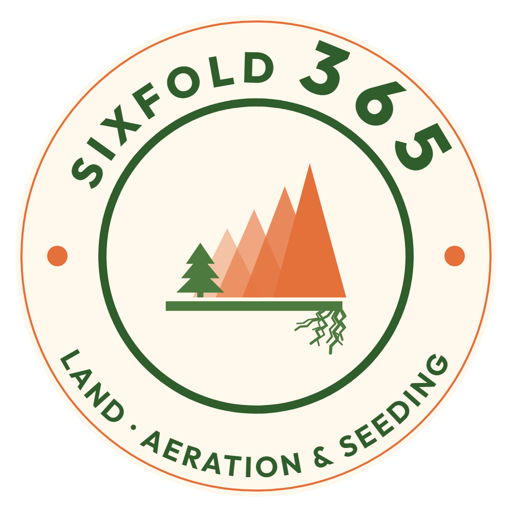
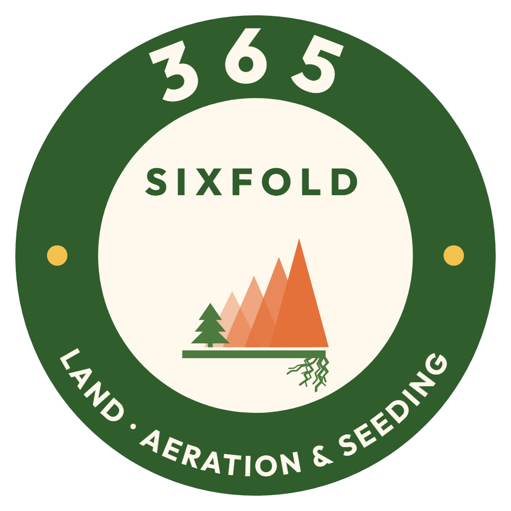
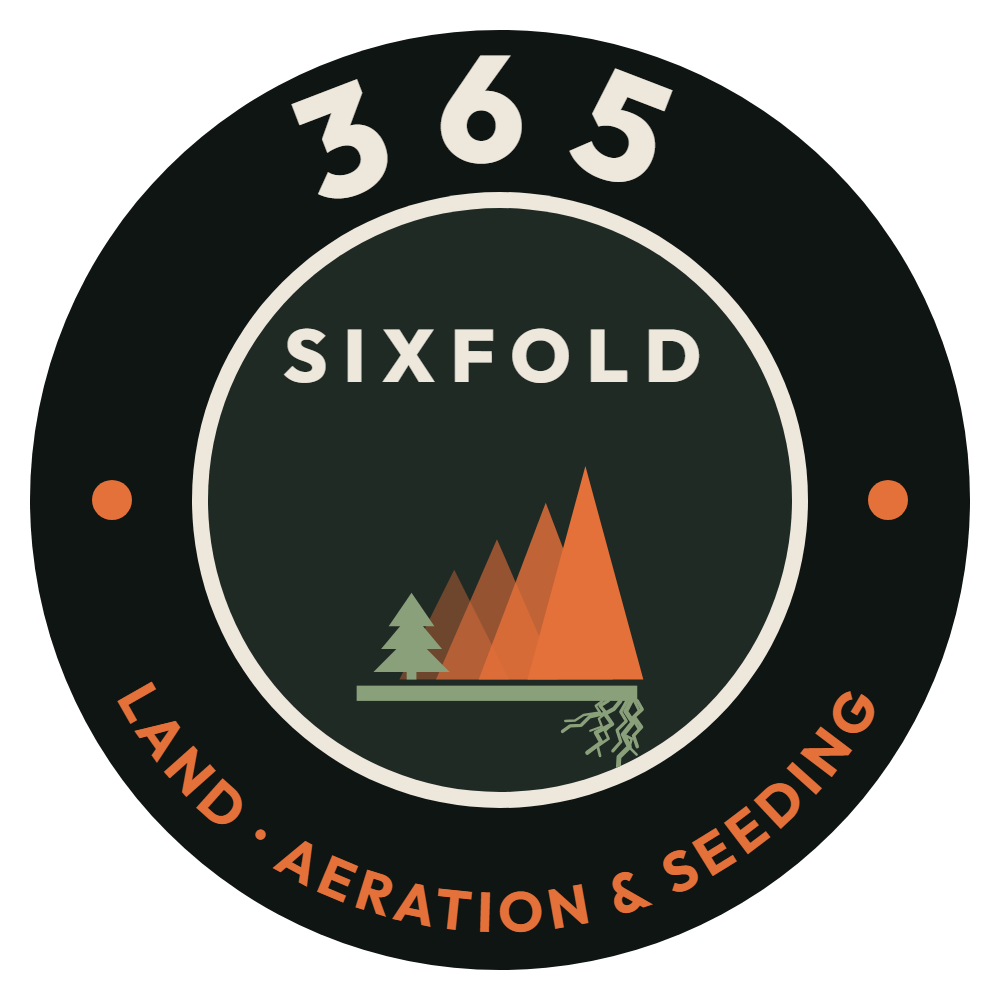
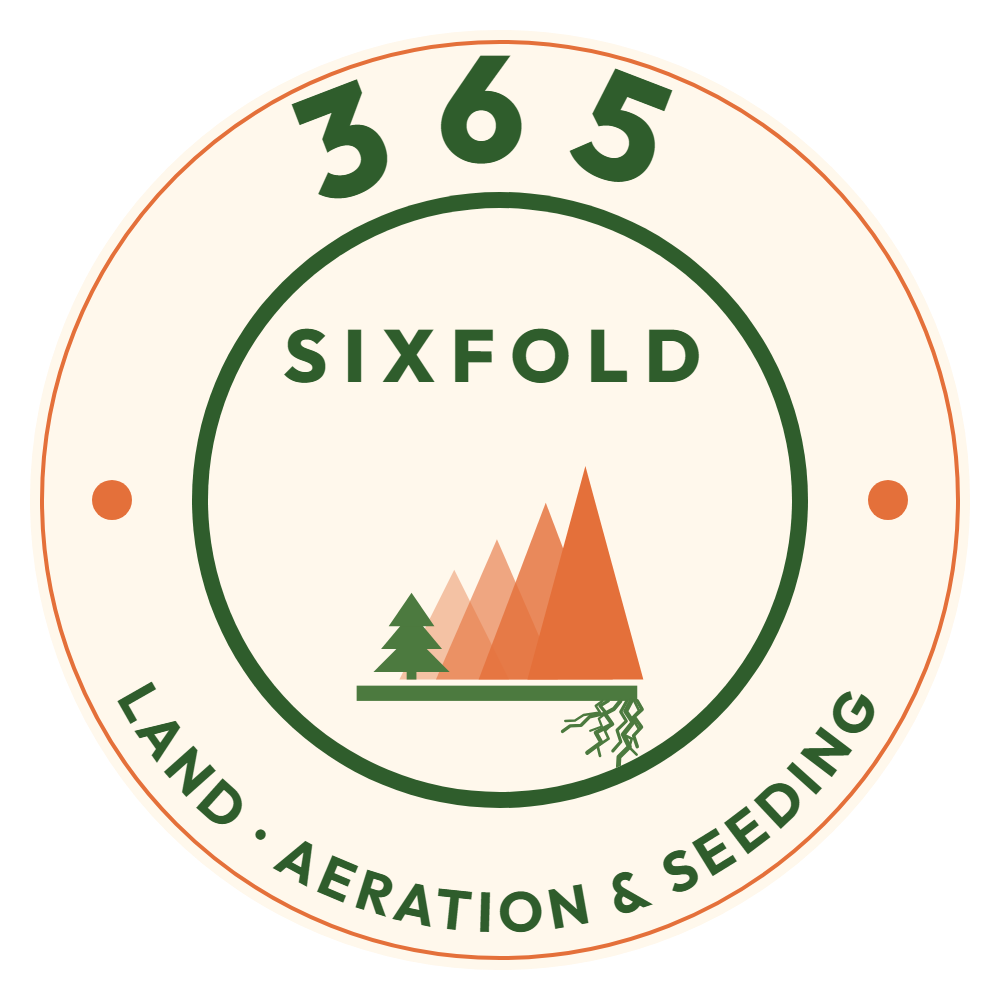

Wording: SIXFOLD 365 / LAND · AERATION & SEEDING. Three layouts, each in the three colour options; the Ridge mark (with its roots) stays in the middle.
Reads SIXFOLD 365 around the top in one line; LAND · AERATION & SEEDING kept on the bottom. The mark stays full size.



Same words, but 365 stays the big number and SIXFOLD sits before it in smaller letters. Bottom kept; mark full size.



SIXFOLD above the peaks; the mark a little smaller, roots kept. Reads as the Sixfold logo sitting inside the 365 ring.


